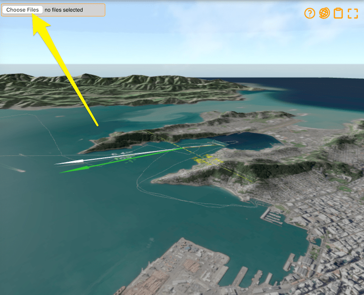
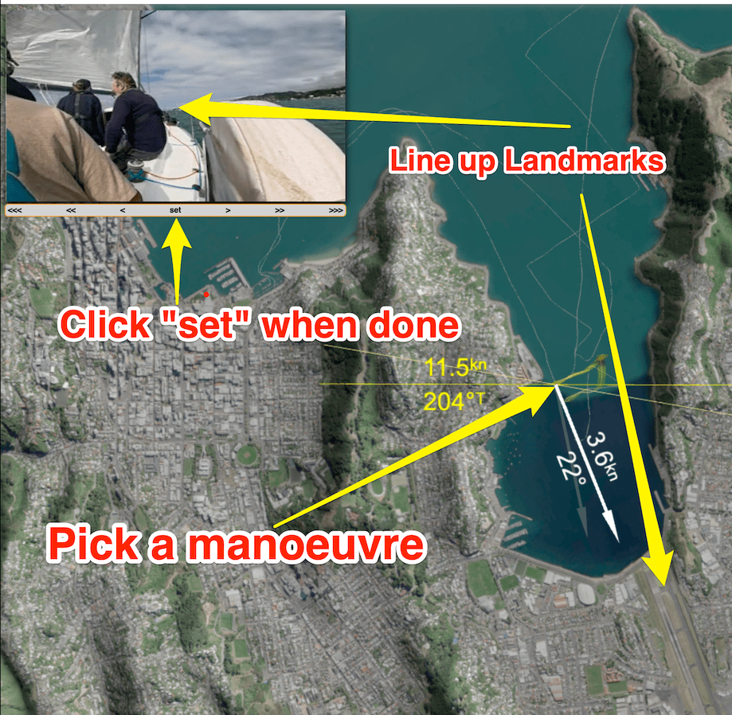

You may have seen some See Sailing recordings have a synchronised video attached. If not, click below to see what it's all about.
Kite hoist, See Sailing video synchronised recording.
See Sailing can (only) ingest mp4 videos with embedded timestamps. It is tested on GoPro footage, but that is by no means the only vendor you can use.Similarly, it will help if your action camera's clock is set to the correct local time, although there is an option to correct time misalignments once the footage has been ingested. You're going to want to ensure there's enough space on your camera's memory card - GoPro recordings can easily run to around 4GB/hr - and that the battery is fully charged.
It's best to start the video after starting your See Sailing recording, and for sanity's sake I would recommend maybe 15 minutes before the start. Ensure your camera is pointed in the right direction and is not in a position where a crew member will regularly block it. The stern quarter, in particular, is a shocker for this problem.
It is probably wise to use a desktop computer to upload the files or at least one that has a connection to mains power. Similarly, don't upload the files over a mobile data connection - particularly if you have a data cap.
Navigate to the recording you want to upload a video for and see in the top left corner there is a "choose files" button. Click it and select the video files you want to upload, taking care to ensure they are the right ones for this recording.
It's important to select all the files that form part of one recording - there is no "add one I missed" option later.
The actual upload will take a long time. On a fast connection each gigabyte will take about two minutes so don't wait for it to happen. Leave the window open and generally speaking don't mess with it.
The "Uploading" sign will then change to "Processing" which means your upload has been received and is in the queue to be processed into a form useful on the web. Again, this is (currently) a very slow process and you should wait for the promised email to arrive.
The timecode should synchronise the video to the See Sailing recording, but in practice they have proven to still be out of sync. See Sailing has a small set of controls to fine tune the sync between video and recording. Ensure you are logged in, then go to the recoding you wish to change...
The arrows underneath the video move it backward and forward by fixed amounts. <<< is 1 hour, << is 1 minute, < is one second. Once you've got the video in sync, press "set" to make your changes permanent.
There are a few tricks to getting this right. One is to choose a time when the yacht is in a manoeuvre to sync against - pick a tack or gybe so you know the video is in sync when (for instance) the boom crosses the centreline. In the picture above you can see the yacht is mid-tack, but also that the bow is pointing at the airport runway (conspicuous for being a rare piece of flat ground in Wellington). In essence we know this is "true" for only a short time so if the data and the video show them both happening at once, we must be in sync.
There is a button on the bottom of the screen to remove the video. If you need to update the video you'll need to remove the old one first (sorry).